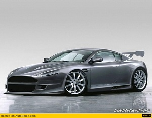
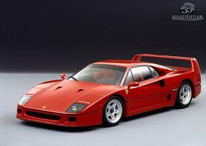
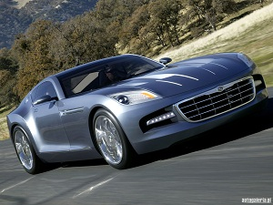

A világ leggyorsabb autói
Aston Martin Vantage
Az Aston Martin annyira túlmutat a normális autók világán, hogy csodálkoznék, ha akadna olyan olvasónk, aki vesz egyet, bár arra jó esély van, hogy aki végül igen, az elõtte nálunk néz utána. Hogy is van a sportos autók szamárlétrája? Kezdem, mondjuk, a nagyszerû Fiat Panda 100HP-vel, 3 millióért, amit esetleg adott esetben meg is vennék. Aztán jön a kortárs hot hatch felhozatal, ami nem kéne, a nehéz, kitömött Golf GTI-kkel és Focus ST-kkel. Egy jó Subaru Impreza WRX STI-vel vagy Honda S2000-rel már át is léptük a tízmilliós határt, ami egy bérbõl és fizetésbõl élõnek gyakorlatilag nem létezõvé tesz egy új autót.
Ferrari F40
Utálom leírni, de sajnos az F40-est nem volt alkalmam kipróbálni a cikk megírása elõtt. Sõt, valószínûleg soha nem is lesz. Csak esetleg akkor, ha mondjuk sikerül összehaverkodni a brunei szultánnal. Utóbbinak sajnos elhanyagolható az esélye, mivel viszonylag ritkán járunk ugyanazon szórakozóhelyekre. Más típusú Ferrarit még sikerült volna felhajtani egy menetpróba erejéig, de sajnos idõ hiányában ezt is elvetettük. Marad tehát a nyálcsorgatás.
Mazda RX 8
 A Mazda RX-8-as nem csak autóként vagy látványként számít érdekességnek, hanem a sztorija is rendkívül különleges. Kezdjük rögtön a legelején. Ötvenes évek, Németország. Felix Wankel professzor, egy német mérnök-géniusz 1957-ben szabadalmaztatta a forgódugattyús motor terveit. A konstrukció lényege, hogy egy domború oldalú háromszög (azaz epitrochoid) alakú forgódugattyú pörög e
A Mazda RX-8-as nem csak autóként vagy látványként számít érdekességnek, hanem a sztorija is rendkívül különleges. Kezdjük rögtön a legelején. Ötvenes évek, Németország. Felix Wankel professzor, egy német mérnök-géniusz 1957-ben szabadalmaztatta a forgódugattyús motor terveit. A konstrukció lényege, hogy egy domború oldalú háromszög (azaz epitrochoid) alakú forgódugattyú pörög e
Chrysler Crossfire
Német lapok információi szerint a Chrysler erõsen visszaveszi a Crossfire gyártását. Az amerikaiak jelenleg évente 12.000 darabot építenek a kupéból, illetve a roadsterbõl, sajnálatos módon azonban a termelés jelentõs része ott porosodik a márkakereskedésekben. Jelenleg a márka piaci elemzõi szerint évi 4000 darabra lenne reális kereslet, a Chrysler szóvivõje persze "roppant pesszimistának" nevezte ezeket a sajtóértesüléseket, mivel azonban ennél komolyabb cáfolat nem érkezett rá, ezért valószínûsíthetõ, hogy tényleg nem áll olyan jól a modell szénája.